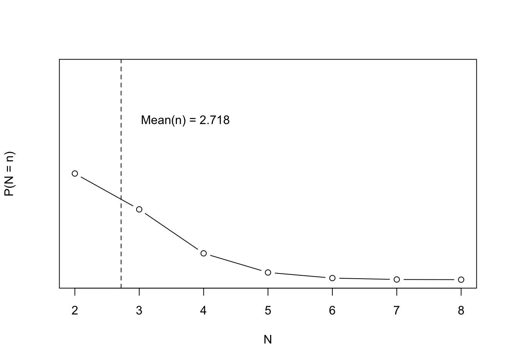

If you pick a uniformly random real number on [0,1] and repeat this until the sum of numbers picked is greater than 1, you’ll on average pick \(e \approx 2.718\) numbers
Posed in a way that we can actually begin to solve this.
Sample independent uniform random variables \(U_1, U_2, \ldots\) and let \(S_n = \sum_{i = 1}^n U_i\). Let \(N\) be the first integer \(n\) such that \(S_n > 1\). Find \(E[N]\)
Bonus question: What is the \(E[S_n]\)? Can we find its distribution?
Of course, the first step is to replicate the simple simulation.
Simulation
# Sample from independent uniform U(0,1) distributions and stop when the sum# is greater than 1. Let N be that first sum. Then E[N] = esim_sum <-function(t =1) { s_n <-0 n <-0while(s_n <1) { s_n <- s_n +runif(1) n <- n +1 }c(n = n, s_n = s_n)}reps <-1e4N_sim <-data.frame(t(replicate(reps, sim_sum())))N_sim_table <-table(N_sim$n)N_sim_prob <- N_sim_table / repsK <-as.numeric(names(N_sim_table))mean_N <-mean(N_sim$n)plot(K, N_sim_prob, type ='b', ylim =c(0, 1), ylab ='P(N = n)', xlab ='N')abline(v = mean_N, lty =2)text(x = mean_N +1, y =0.75, sprintf('Mean(n) = %.03f', mean_N))

Proof
The idea of the proof is to directly solve:
\[
E[n] = \sum_{n = 1}^\infty n \cdot P(N = n)
\]
So we need to calculate, \(P(N = n)\). This is the same as, \(P(S_{n - 1} \leq 1 \text{ and } S_n > 1)\). If we calculate \(P(S_n \leq x) = F_{S_n}(x)\) we can complete the proof.